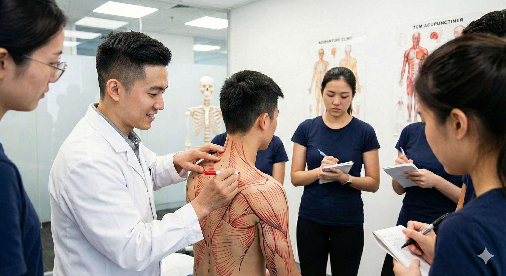

面對未知，轉化為一股強烈而專注的求知動能
面對未知，轉化為一股強烈而專注的求知動能
“啊！原來承山在這裡，那我以前都針錯了！”
這是這次第二屆工作坊的學員在實作時當下的回饋，又好氣又好笑，但也是曾經的我。
針灸取穴，除了“同身寸”抓個大致位置，更需要的是精準的徒手觸診。
『《靈樞·九針十二原》：節之交，三百六十五會，知其要者，一言而終，不知其要者，流散無窮。所言節者，神氣之所游行出入也，非皮肉筋骨也。』
當我們放下書本上標準化、平面化的穴位圖譜，真正運用雙手與指尖去感受人體組織的溫度、張力、厚度與層次時，強烈的具象化衝擊感油然而生。
透過觸摸會深刻體悟到，若僅停留在皮肉筋骨的「表層的認知」，而缺乏對皮下立體結構的精準掌握，那麼手中的針，便難以觸及《靈樞》所言那神氣遊行出入的關鍵樞紐——「節之交」，也就是俗稱的「穴道」。
表面解剖觸診，實則是連結中醫經典理論與現代臨床實踐的關鍵橋樑。透過表面解剖觸診的學習，可以將平面化的穴位，落實於具體的解剖結構之上。
在學員們互相進行徒手分離肌群並親自畫記的過程中，我們見證了許多「頓悟」的時刻。當手指終於清晰辨識出肌肉起止點的微妙邊界，或是摸索到肌腱與骨骼之間的微小縫隙時，才恍然大悟：原來跟我以為的完全不一樣！而往往正是因為定位的「失之毫釐」，導致療效「差之千里」。
舉辦此類高強度實作工作坊的核心初衷，絕不僅止於糾正單一穴位的取法位置。我們更期望傳遞一種嚴謹的臨床態度：對人體結構懷抱敬畏，對每一次觸診都力求精確。
因為，唯有當指尖具備了「透視」皮下世界的能力，能夠在錯綜複雜的肌肉、筋膜與神經血管中，精準地導航至目標區域時，你手中的針，才能真正發揮「直達病所」的力量，而非在茫茫肌海中「迷失方向」。
從「承認不知道」到「尋求知道」，再到臨床上精準地「做到」，這是一條充滿挑戰的專業修行之路。但我相信，當我們願意重新審視這些看似基礎、實則深奧的表面解剖知識，並透過雙手反覆驗證時，臨床針傷或徒手的技術，已然跨入了另一個嶄新的境界。
#表面解剖觸診與徒手入門工作坊第五屆
https://forms.gle/haN8j4x6LVFFoP6j
太初·初心苑
中醫師 黃彥鈞
